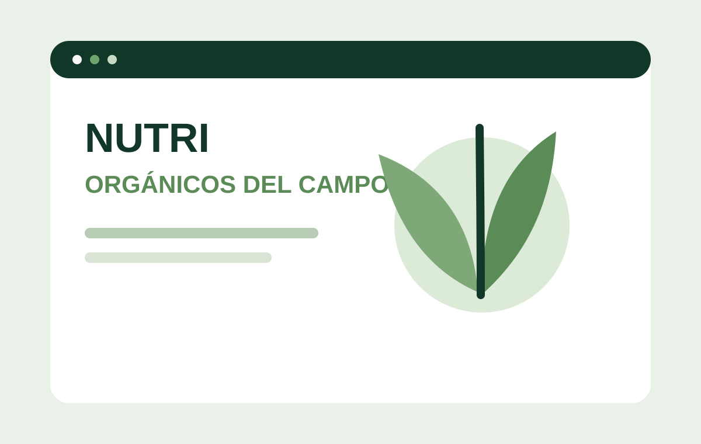

WEB CORPORATIVA · DESTACADO
Arzana Reformas
Sitio corporativo orientado a presentar servicios de reformas, generar confianza y facilitar solicitudes de presupuesto.
NUESTRO TRABAJO
Una selección de sitios y experiencias digitales desarrolladas para empresas, marcas y proyectos con necesidades distintas.
PORTAFOLIO
Algunos proyectos tienen un desarrollo más reciente o una historia que queremos destacar, pero todos forman parte del mismo recorrido y muestran cómo abordamos distintos sectores y objetivos.
Sitio corporativo orientado a presentar servicios de reformas, generar confianza y facilitar solicitudes de presupuesto.

Presencia digital pensada para presentar la marca, su propuesta comercial y facilitar el contacto con potenciales clientes.

Experiencia web para comunicar servicios de consultoría, coaching, capacitación y desarrollo empresarial.

Presencia corporativa para una empresa de servicios contables y asesoría empresarial de Guayaquil.

Experiencia de comercio electrónico desarrollada para presentar productos y facilitar su comercialización online.

Tienda online enfocada en organizar el catálogo y acercar la oferta de productos al cliente digital.

Proyecto web orientado a presentar contenidos y servicios de forma clara dentro de una experiencia accesible.

Experiencia digital para una propuesta vinculada a educación y formación.

Proyecto orientado a comunicar servicios tecnológicos dentro de una estructura web corporativa.
¿TIENES UNA IDEA SIMILAR?
Cada solución se adapta al negocio, al público y al objetivo. El portafolio muestra experiencia; el siguiente proyecto empieza entendiendo lo que tú necesitas.